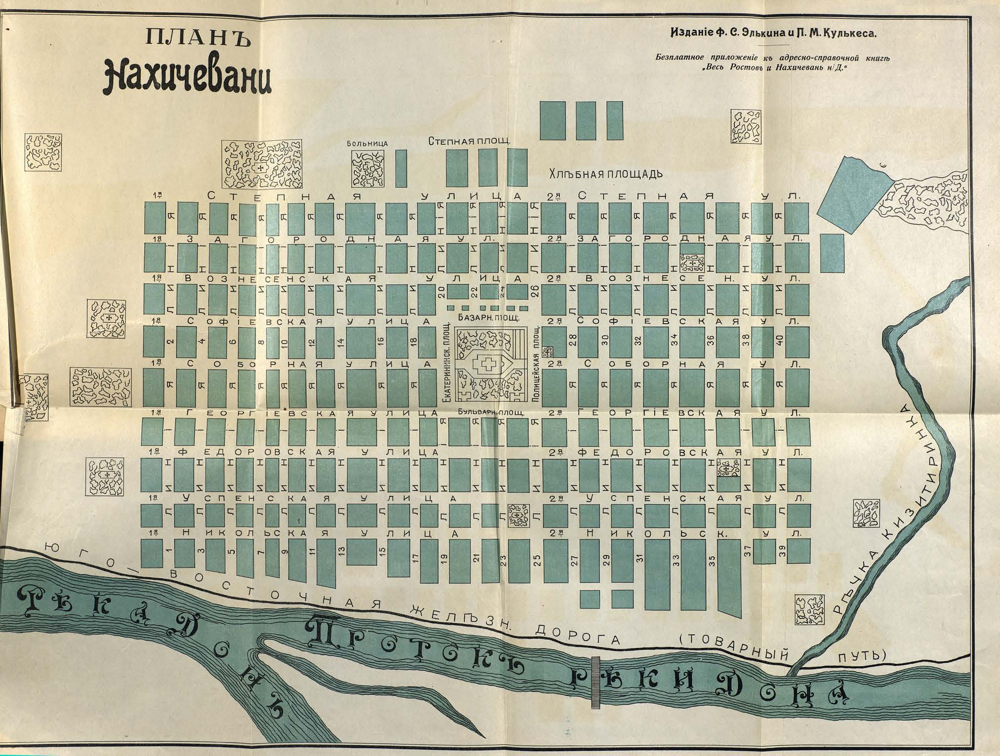

Лист источника 503
Скан

Распознанный текст
ПЛАНЪ
Нахичевани
Изданіе Ф. С. Элькина и Л. М. Кулькеса.
Безплатное приложеніе къ адресно-справочной книгѣ
„Весь Ростовъ и Нахичевань н/Д.“
БОЛЬНИЦА
СТЕПНАЯ ПЛОЩ.
ХЛѢБНАЯ ПЛОЩАДЬ
1-я С Т Е П Н А Я У Л И Ц А 2-я С Т Е П Н А Я У Л.
1-я З А Г О Р О Д Н А Я У Л. 2-я З А Г О Р О Д Н А Я У Л.
1-я В О З Н Е С Е Н С К А Я У Л И Ц А 2-я В О З Н Е С Е Н. У Л.
БАЗАРН. ПЛОЩ.
1-я С О Ф І Е В С К А Я У Л И Ц А 2-я С О Ф І Е В С К А Я У Л.
Екатерининск. ПЛОЩ.
Полицейская ПЛОЩ.
1-я С О Б О Р Н А Я У Л И Ц А 2-я С О Б О Р Н А Я У Л.
1-я Г Е О Р Г І Е В С К А Я У Л И Ц А БУЛЬВАРН. ПЛОЩ. 2-я Г Е О Р Г І Е В С К А Я У Л.
1-я Ф Е Д О Р О В С К А Я У Л И Ц А 2-я Ф Е Д О Р О В С К А Я У Л.
1-я У С П Е Н С К А Я У Л И Ц А 2-я У С П Е Н С К А Я У Л.
1-я Н И К О Л Ь С К А Я У Л И Ц А 2-я Н И К О Л Ь С К. У Л.
ЛИНИІЯ
1 3 5 7 9 11 13 15 17 19 21 23 25 27 29 31 33 35 37 39
ЛИНИІЯ
2 4 6 8 10 12 14 16 18 20 22 24 26 28 30 32 34 36 38 40
ЛИНИІЯ
Ю Г О В О С Т О Ч Н А Я Ж Е Л Ѣ З Н. Д О Р О Г А (Т О В А Р Н Ы Й П У Т Ь)
Р Ѣ К А Д О Н Ъ
П р о т о к ъ р ѣ к и Д о н а
Р Ѣ Ч К А К И З И Т И Р И Н К А